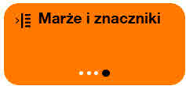

Orange Komfort+
Aby uzyskać bardziej użyteczne strony internetowe.
Aby podkreślić dostępność Twojej strony internetowej.
Komfort+ to rozszerzenie przeglądarki, które ułatwia czytanie i nawigację po stronach internetowych. Pozwala na poprawne wyświetlenie tekstu, przycisków, linków, a także na syntezę mowy i ułatwia nawigację, oferując specyficzne przyciski, duży kursor myszy, dobrze widoczny fokus oraz szybki dostęp do wielu ustawień.
Orange Komfort+ to darmowe rozszerzenie przeglądarki (open-source), dostępne na .
Na niektórych stronach internetowych Komfort+ jest już zainstalowany. W takim przypadku dostęp jest bezpośrednio za pośrednictwem kółka wyświetlanego w prawym górnym rogu, tak jak na tej stronie.
Do kogo skierowana jest usługa Orange Komfort+
Paleta Komfort+ jest zorganizowana w grupy ustawień, jedne dedykowane są dla osób szukających jedynie nieco większej łatwości w użytkowaniu (Tryb Łatwy+), inne do osób poszukujących lekkich ustawień wizualnych (Tryb Wizualny+) lub bardziej zaawansowanych ustawień wizualnych, takich jak duże powiększenie i bardzo wysoki kontrast (Tryb Wizualny++).
Inne ustawienia są przeznaczone dla osób potrzebujących udogodnień do czytania, takich jak czytelny i głosowy tekst (Tryb Czytanie+) lub bardziej zaawansowane narzędzia, takie jak linijki, marginesy, kolorowanie (Tryb Czytanie++).
Wreszcie oferowane są ustawienia nawigacji dla osób mających trudności z używaniem wskaźnika myszy i preferujących większe przyciski lub nawet niepotrzebujących klikać myszą dzięki automatycznemu klikaniu po najechaniu (Tryb Wskaźnik+). Inne ustawienia są dostępne dla osób korzystających wyłącznie z przycisków lub poleceń klawiatury do nawigacji po stronach internetowych (Tryb Moteur+).
Dla twórców stron internetowych, Komfort+ jest doskonałym sposobem na jeszcze lepsze uwidocznienie prac związanych z dostępnością cyfrową realizownych na ich stronie internetowej.
Skąd pochodzi Orange Komfort+ ?
Usługa Orange Komfort+ została stworzona przez Orange. Wdraża podejście projektowe, skoncentrowane na różnorodności użytkowników i realizujące zasady projektowania uniwersalnego. Interfejs dla wszystkich, ustawienia spersonalizowane dla każdego.
Wymagania wstępne
Ustawienia Komfort+ będą działać poprawnie tylko na stronie przestrzegającej zasad dostępności cyfrowej. Jeśli strona jest niedostępna, korzystanie z Komfort+ sprawi, że może ona stać sie nieczytelna. Przycisk Pauza pozwala tymczasowo dezaktywować Komfort+.
Jeśli Komfort+ nie poprawia witryny, to dlatego, że nie jest ona zgodna z zasadami. Jest to okazja do zgłaszania niedostępnych witryn. Jest to również okazja do zobaczenia wysiłków na rzecz dostępności podejmowanych przez inne witryny.
Jak uzyskać dostęp do Komfort+
Rozszerzenie Komfort+ jest dostępne na liście rozszerzeń dostępnych dla przeglądarek ..
Pobieranie rozszerzenia
Najnowsza wersja jest wersją eksperymentalną. Jeśli zdecydujesz się zainstalować tę wersję, dziękujemy za pomoc w jej ulepszaniu. Prześlij nam swoje uwagi za pośrednictwem wiadomości: Komfort.plus@orange.com.
Ostatnia wersja 5.1.0 (eksperymentalna)
Wersja wcześniejsza (4.3.6)
Rozszerzenie to jest nadal rozpowszechniane: odwiedź stronę wersja 4.
Instalacja Komfort+
Korzystanie z Komfort+
Wybierz swój sposób użytkowania
Poznaj tryby użytkowania i wybierz ten, który najlepiej Ci odpowiada, klikając na Zatwierdź ten tryb.
Jeśli wahasz się między dwoma, nie martw się, wszystkie ustawienia są dostępne we wszystkich trybach użytkowania. Będziesz mógł więc dopasować swoje ustawienia.
Wracając do tego ekranu, będziesz mógł również zresetować tryb użytkowania.
Po wybraniu trybu, możesz zamknąć paletę Komfort+ klikając na podwójne strzałki w prawym górnym rogu palety.
Aby ponownie otworzyć paletę, wystarczy kliknąć na miniaturkę przedstawiającą człowieka w kole , symbolizującą dostępność uniwersalną.
Pauza
Niektóre strony są zbyt mało zgodne z zasadami dostępności. Komfort+ powoduje wtedy więcej szkód wizualnych niż korzyści. W takim razie praktyczne jest wyłączenie wszystkich ustawień Komfort+ za jednym razem. Aby to zrobić, naciśnij przycisk Pauza.
Przyciski wielokrotnego kliknięcia
Aby zmienić ustawienia, masz szybki dostęp do wyboru za pomocą dużych przycisków. Te przyciski można klikać wielokrotnie z rzędu (3 lub 4 razy), a różne ustawienia zostaną wówczas wdrożone na stronie internetowej.
Pierwsze ustawienie każdego przycisku (gdy czarna kropka jest najbardziej po lewej stronie) nie ma żadnego efektu, nie zmienia bieżącej strony. To sposób na anulowanie jednego z ustawień.
Pełne ustawienia
Klikając przycisk Wszystkie ustawienia na dole palety głównej, możesz uzyskać dostęp do wszystkich dostępnych ustawień we wszystkich trybach użytkowania. Lista jest długa i podzielona na kategorie (Tekst, Wyświetlanie, Obrazy, Audio, Nawigacja). Przyciski Więcej opcji umożliwiają dostęp do zaawansowanych ustawień, które oferują inne wybory
Ustawienia zaawansowane
Ustawienia zaawansowane pozwalają na jeszcze szerszy wybór dla każdego ustawienia. Jeśli wybierzesz ustawienie, które nie jest jeszcze obecne w odpowiadającym mu przycisku wielokrotnego kliknięcia, zostanie ono dodane jako 4. wybór spersonalizowany.
Zapamiętywanie twoich ustawień
Komfort+ zapamięta Twoje ustawienia dla każdej odwiedzanej strony internetowej. Możesz w ten sposób dokonać pewnych ustawień dla jednej strony, a innych dla innej strony. Kiedy wrócisz na te strony, Komfort+ wprowadzi odpowiednie ustawienia specyficzne dla każdej strony.
Jesteś programistą?
Zintegruj Orange Komfort+ na swoich stronach.
Usługa jest mało inwazyjna, integruje się w formie linku, którego wygląd i położenie na stronie można dostosować.
Komfort+ proponuje poprawę użytkowania strony, ale nie naprawi strony, która nie przestrzega zasad dostępności. Aby Komfort+ zaproponowało optymalne rozwiązanie, Twoja strona musi spełniać zalecenia dotyczące dostępności WCAG 2.2 lub RGAA 4.1.2.
Podczas aktywacji usługi przez użytkownika, wyświetla się paleta nawigacyjna.
Na Twojej stronie dodanie usługi Orange Komfort+ odbywa się poprzez proste dodanie pliku JavaScript do Twojego kodu HTML.
Plik JavaScript usługi Orange Komfort+ doit être hébergé sur un serveur. musi być hostowany na serwerze. Ten serwer może być serwerem Twojej strony lub zdalnym serwerem hostowanym przez partnera (na innej domenie). Jeśli zdecydujesz się na korzystanie ze zdalnego serwera hostowanego przez partnera, użytkownik usługi Orange Komfort+ znajdzie swoje ustawienia na wszystkich stronach korzystających z tego serwera.
Dostępność Orange Komfort+
Orange Komfort+ przeszedł audyt dostępności WCAG. Zapoznaj się z deklarację zgodności.